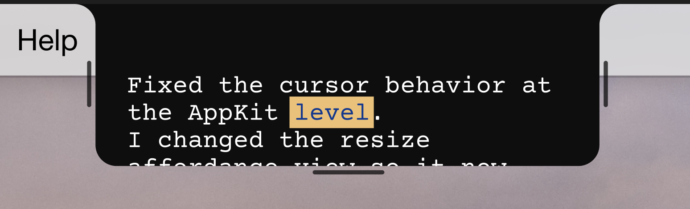

MacBook camera
A notch-aligned mode for built-in webcam setups where the natural eyeline is fixed.
Camera-aligned prompting for macOS
Utterbox places your script on the camera line, whether you are reading from a MacBook notch or an external webcam above a larger display.

Two placement modes. Voice follow when you want it. Direct manual control when you do not.
A notch-aligned mode for built-in webcam setups where the natural eyeline is fixed.
A floating mode for studio monitors, external webcams, and desk layouts that are not centered.
On-device speech is the default, cloud fallback is explicit, and draft persistence is optional.
Built for real speaking setups